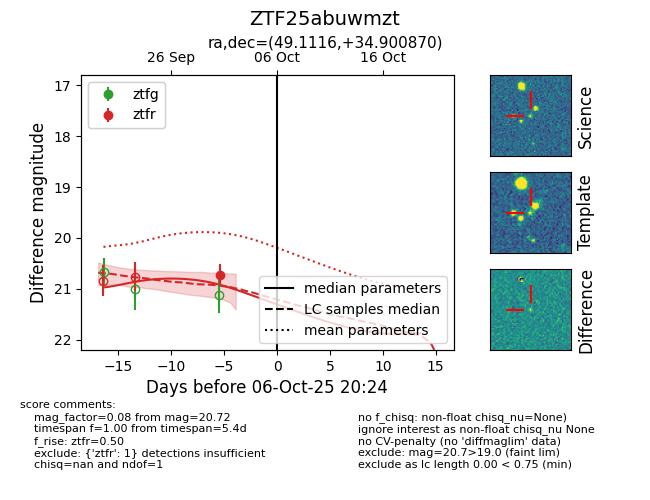
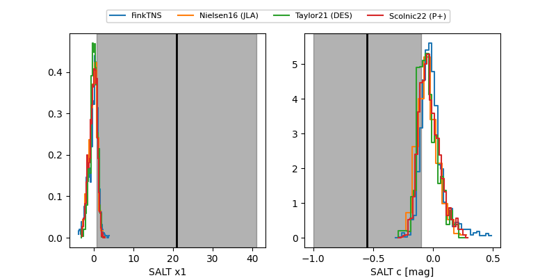

FINK: ZTF25abuwmzt
Lasair: ZTF25abuwmzt
ALeRCE: ZTF25abuwmzt
ZTF25abuwmzt (ztf,fink)
equatorial (ra, dec) = (49.1116,+34.90087)
galactic (l, b) = (153.8180,-19.13088)


last ztfr=20.72
1 ztfr detections